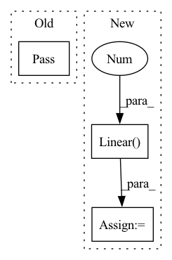

Pattern ID :27341

Before Change
def test_variational_inference(self):
//create module, check if inference is variating
pass
def test_freeze_module(self):
//create module, freeze
//check if two inferences keep equal
After Change
def test_variational_inference(self):
//create module, check if inference is variating
blinear = BayesianLinear(10, 10)
linear = nn.Linear(10, 10)
to_feed = torch.ones((1, 10))
self.assertEqual((blinear(to_feed) != blinear(to_feed)).any(), torch.tensor(True))
self.assertEqual((linear(to_feed) == linear(to_feed)).all(), torch.tensor(True))
In pattern: SUPERPATTERN
Frequency: 3
Non-data size: 3
Instances
Fragment ID: 81255883
Project Name: piesposito/blitz-bayesian-deep-learning
Commit Name: 2835064e428713d1438fec5dea85825ab2140662
Time: 2020-03-02
Author: piero.skywalker@gmail.com
File Name: bbp_torch/modules/linear_bayesian_layer_test.py
M Class Name: TestLinearBayesian
N Class Name: TestLinearBayesian
M Method Name: test_variational_inference(1)
N Method Name: test_variational_inference(1)
M Parent Class: unittest.TestCase
N Parent Class: unittest.TestCase
M File Name: bbp_torch/modules/linear_bayesian_layer_test.py
N File Name: bbp_torch/modules/linear_bayesian_layer_test.py
M Start Line: 16
M End Line: 16
N Start Line: 27
N End Line: 33
'>
Before Change
class MalConvBase(nn.Module):
def __init__(self):
pass
def forward(self, x):
pass
After Change
kernel_size=window_size,
stride=window_size,
)
self.fc = nn.Linear(out_channels, 1)
def forward(self, x):
batch_size, seq_len = x.size(0), x.size(1)
embedding = self.dropout(self.embed(x))
'>
Fragment ID: 81255881
Project Name: jaketae/deep-malware-detection
Commit Name: 3698a8a10e3a726ec855ce212d147f35fd24facc
Time: 2020-11-19
Author: jaesungtae@gmail.com
File Name: models.py
M Class Name: MalConvBase
N Class Name: MalConvBase
M Method Name: __init__(6)
N Method Name: __init__(1)
M Parent Class: nn.Module
N Parent Class: nn.Module
M File Name: models.py
N File Name: models.py
M Start Line: 16
M End Line: 17
N Start Line: 8
N End Line: 19
'>
Before Change
class MonotonicAttention(torch.nn.Module):
def __init__(self):
pass
class LuongMonotonicAttention(torch.nn.Module):
def __init__(self):
After Change
self.v_linear = nn.Linear(target_size, target_size)
self.bias = nn.Parameter(torch.Tensor(target_size).normal_())
self.v = nn.utils.weight_norm(nn.Linear(target_size, 1))
self.v.weight_g.data = torch.Tensor([1 / target_size]).sqrt()
self.r = nn.Parameter(torch.Tensor([init_r]))
'>
Fragment ID: 81255880
Project Name: rucaibox/textbox
Commit Name: a58fdf4b51c70b10472233bfb9a06dea305ee9cb
Time: 2020-12-03
Author: lijunyi@ruc.edu.cn
File Name: textbox/module/Attention/attention_mechanism.py
M Class Name: MonotonicAttention
N Class Name: MonotonicAttention
M Method Name: __init__(4)
N Method Name: __init__(1)
M Parent Class: torch.nn.Module
N Parent Class: torch.nn.Module
M File Name: textbox/module/Attention/attention_mechanism.py
N File Name: textbox/module/Attention/attention_mechanism.py
M Start Line: 24
M End Line: 25
N Start Line: 104
N End Line: 116